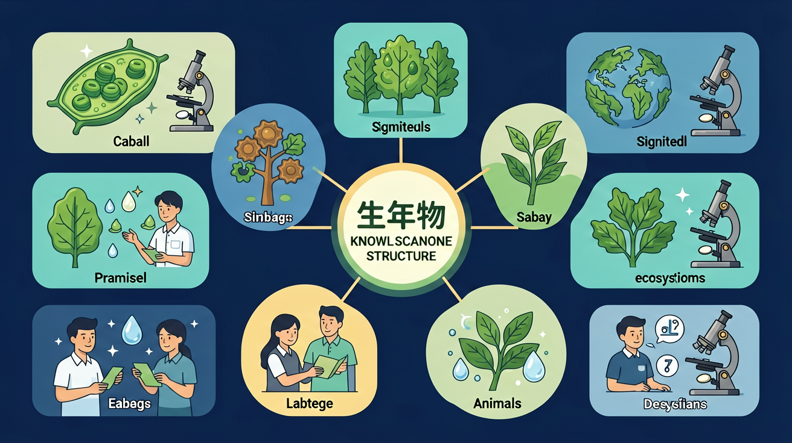

❓ 为什么狗和狼长得像却不同种？
❓ 病毒算不算生物？分类时放哪儿？
❓ 分类等级里‘科’和‘属’哪个范围更大？
学完这一课，这些问题你都能自信地回答。

🎯 能说出生物分类的7个基本等级
🎯 能根据形态特征判断生物亲缘关系远近
🎯 能分析分类学在保护生物多样性中的作用
这段动画用 Remotion 程序化渲染（1280×720 @30fps），12 个场景依次浮现：开场 → 200 万物种规模 → 三把分类钥匙 → 林奈七级阶梯 → 家猫七级地址 → 亲缘黄金规则 → 大熊猫反直觉 → 家犬 ≡ 灰狼 → 校园探究 → 五步法 → 三个带走 → 告别。每个画面与旁白严格同步，可暂停回看任意节点。
📌 视频与下方音频模块的旁白同源，但视频承载的是**动态信息密度**——12 个场景累计 50+ 个新画面信息单元（彩色等级条、地址行、对比卡片、关系树等）。
能按从大到小的顺序说出并写对七个分类等级（界门纲目科属种）
给定 2-3 种生物，能判断它们在哪一级是同一类，并说出亲缘远近
能从本地常见动物中选出 3 种，独立完成一份分类调查记录单
这两题做完，系统会判断你需要"加速版"还是"完整版"路径。
对了 1 题。基础有了，但还需要把"分类的科学依据"再过一遍。
👉 按顺序学习模块一 → 模块二 → 模块三 → 探究活动。
没关系，这两题都是"陷阱题"，专门用来揭示常见误区。学完这节课你会发现自己的判断力跃升一大截。
👉 模块一会有一段额外的"分类陷阱"讲解，帮你把概念彻底打通。
A · 你已经知道：地球上的生物种类繁多，从七年级到八年级你已经接触过细菌、植物、各种动物。
B · 但有个问题：已知生物超过 200 万种，每年还在新发现约 1.5 万种。如果每个国家、每个研究者都用自己的语言起名字，比如中国叫"猫"、英国叫"cat"、日本叫"ネコ"……科学家们根本无法交流。
T · 所以这节课要学：科学家发明了一套统一的分类系统——把所有生物放进 7 个大小不同的"抽屉"里，每个生物都有自己唯一的"地址"。
生物分类学（Taxonomy）是根据生物之间的相似程度，把它们归到不同等级的方法。等级越大，里面的生物越多、差异越大；等级越小，里面的生物越少、相似度越高。
📌 核心原则：看相似程度，不看表面长相。
把分类想象成俄罗斯套娃：最外面的大娃娃是"界"，里面装着稍小的"门"，门里装着更小的"纲"……一直套到最里面的"种"。一个生物从大到小，会被装进 7 层娃娃里。
「鲸鱼」名字里有"鱼"，长得也像鱼，但它用肺呼吸、胎生、哺乳，所以属于哺乳纲，和牛、马是亲戚，反而和金鱼相隔很远。
同理：蝙蝠不是鸟，海豚不是鱼，海星不是鱼——这些都是分类陷阱。
下列哪一项不能作为科学分类的依据？
1735 年，瑞典科学家林奈（Carl Linnaeus）提出双名法和等级分类系统。今天全世界的生物学家都在用他的体系。
记忆口诀："界门纲目科属种" 7 个字，从大到小。再加一句帮助理解："越往下走，圈子越小，亲戚越近。"
同种 = 能交配并产生有生育能力的后代（这是「种」的定义，最严谨的判定标准）。
界 → 动物界（Animalia）
门 → 脊索动物门（Chordata） ← 有脊椎
纲 → 哺乳纲（Mammalia） ← 胎生 + 哺乳
目 → 食肉目（Carnivora） ← 吃肉、犬齿发达
科 → 猫科（Felidae） ← 可伸缩爪子、夜视
属 → 猫属（Felis）
种 → 家猫（Felis catus） ★
📍 注意：种名用双名法写——属名 + 种加词，斜体。例如 Felis catus。
下面哪个等级里包含的生物种类最多？
动物园新到一只穿山甲，饲养员问你："它和谁住一个馆比较合适？大象旁边还是熊猫旁边？"
要回答这个问题，你需要知道——哪两个生物在更小的等级上还是同类。
两个生物在越小的分类等级上还能归在一起，它们的亲缘关系就越近，共同特征也越多。
举例：
下面 5 种你都见过。先看它们的"分类卡"，再看下面的进化树，会更直观。
大熊猫看起来"萌萌的、吃竹子"，很多人以为它和考拉、兔子是亲戚。但科学分类告诉我们——大熊猫属于「食肉目」，和狼、虎才是真正的"远房表兄弟"，和兔子（兔形目）反而隔得远！
这就是分类的价值：揭示表面看不出来的真实亲缘关系。
下列哪一对动物的亲缘关系最近？
课标要求：「充分利用本地的生物资源，组织学生识别生物的特征，尝试开展分类活动。」下面是一个完整的探究 6 步流程。
📷 你家小区或学校附近，能看到很多动物：麻雀、家鸽、流浪猫、宠物狗、池塘里的金鱼、墙角的蚂蚁、夏天的蝉……
问题：这 7 种动物里，谁和谁是"远亲"？谁和谁是"近邻"？请先凭直觉排个序。
凭直觉，你觉得哪两种动物亲缘最近？为什么？（写下你的初始猜想）
列出你打算从哪几个特征去比较？（提示：至少 3 个特征，例如：是否有羽毛、是否胎生、骨骼结构……）
查阅资料，把 7 种动物填到下面的分类等级表中（重点填到「纲」就够了）：
根据上面的等级，重新排出"亲缘从近到远"的顺序。和你第 2 步的初始猜想相比，哪些被推翻了？
如果让你给小学生讲"为什么蝙蝠不是鸟"，你会怎么说？写下你的解释思路。
正确顺序（亲缘从近到远）：
关键启示：分类系统揭示了进化的脉络——共同祖先越近，等级上越接近。这就是"生物进化观点"：今天的分类系统不是人为规定，而是反映了生命演化的真实历史。
情境：生物分类体系有七个等级，试着给一只家猫找到它的位置。
分析：界：动物界（异养、大多能自由运动）；门：脊索动物门（有脊柱）；纲：哺乳纲（胎生哺乳、体表被毛）；目：食肉目（犬齿发达）；科：猫科（爪能伸缩）；属：猫属；种：猫。
结论：分类等级越高，包含的生物越多、共同特征越少；等级越低，包含的生物越少、共同特征越多。「种」是最基本的分类单位，同种生物亲缘关系最近。
把下面打乱的等级，按从大到小拖回正确顺序：
三只动物：骆驼、河马、马。它们都属于哺乳纲，但分别属于不同的目。下列哪种说法正确？
你已经掌握了七级分类与亲缘判断。下面是一个开放性挑战题，没有标准答案，写下你的分析思路即可。
开放任务：随着 DNA 测序技术发展，科学家发现某些原本被分到不同"科"的物种，DNA 其实非常相似。例如鳄鱼和鸟类的 DNA 关系比鳄鱼和蜥蜴更近。
请回答：
1. 林奈分类法不是"过时"，而是"被升级"——它建立了等级框架，DNA 提供了更精准的依据。
2. 现代分类是"形态 + DNA + 行为"综合判断。形态便于野外观察，DNA 揭示亲缘真相。两者互补，缺一不可。
Level 2 错了一次没关系。建议先回到模块三「亲缘比较」重看一次"黄金规则"，然后再做一道补充题：
家猫和虎都属于猫科，但属于不同的属（猫属 vs 豹属）。这说明：
和前测对照，看看自己的进步。
（开放题，自己写下来巩固理解）
1. 七级分类：界门纲目科属种，从大到小
2. 分类依据是综合相似度（结构、生理、遗传），不是表面长相
3. 在越小的等级上还能归到一起，亲缘越近
4. 分类系统反映了生物进化的真实历史，不是人为规定
🎉 课程完成！
七个等级：由大到小依次是：界、门、纲、目、科、属、种。
规律：等级越高，共同特征越少、亲缘关系越远；等级越低，共同特征越多、亲缘关系越近。
种是最基本单位：同种生物形态结构和生理功能相似，能相互交配并产生可育后代。
分类依据：主要根据形态结构、生理功能等特征的相似程度。
意义：便于识别和系统研究生物；弄清亲缘关系，才能为保护生物多样性制定针对性措施。
先独立作答，再点选项查看对错与错因。
下列哪组植物全属于裸子植物？
区分双子叶与单子叶植物的关键依据是
月季的分类等级中，最基本单位是
植物分类等级从大到小依次为：界→____→纲→目→科→属→种
答案：门
分类七级单位需完整记忆
向日葵的叶脉呈____状，属于____子叶植物
答案：网状 双
双子叶植物典型特征
选取5种常见草本植物，对比茎横切面、花瓣数、叶脉类型
像拆快递盒一样层层打开界门纲目科属种
分类等级越高包含生物越多，共同特征越少
猫和老虎同科不同属，比人与黑猩猩的差异小
观察校园植物叶片脉络对比科属特征
用分类思维整理书包：课本-练习册-文具分层
✅ 种是最基本单位，界才是最大
💡 日常用语‘种类’干扰
✅ 鱼类/鸟类/爬行类也属脊椎动物
💡 哺乳动物认知更熟悉
口诀：界门纲目科，属种往下摸，特征越相似，亲缘越不错
类比：分类像淘宝目录：动物界→宠物→狗粮→某品牌
建议完整观看一遍，再回看关键步骤。
不想看字？戴上耳机，听一遍完整讲解。适合通勤、睡前复习。